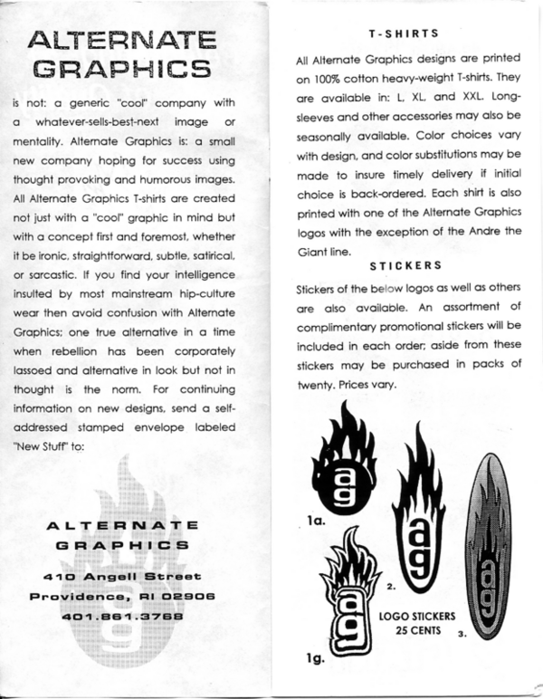

Alternate Graphics
From The Giant: The Definitive Obey Giant Site
In 1992, while still an illustration student at RISD, Shepard Fairey started his first business venture, Alternate Graphics, to showcase his emerging design and silkscreen printing talents. He created stickers, t-shirts, skateboards, and posters which were all available via black and white mail order catalogs that he distributed. He also did small commercial printing jobs for clients to help cover some of his expenses. In 1994, Helen Stickler created a documentary film, Andre the Giant Has a Posse, that focused on Fairey and the growing phenomenon of his subversive stickers and posters. By 1995, Fairey had two or three full time employees, two of whom were long time friends from Charleston, whom he had known through his many years of skateboarding. During this time, he also created a small sister brand, Subliminal Projects, with Blaize Blouin, and released several skateboard and poster designs using this moniker. Fairey created a skateboard video, ADD (Attention Deficit Disorder), that showcased the small group of skateboarders that he sponsored via Alternate Graphics.
|  |
{kind=link}
{kind=link}
{kind=link}
| This article on Alternate Graphics is a stub. Please help us by expanding it! |